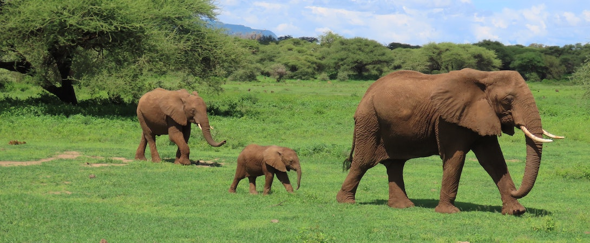
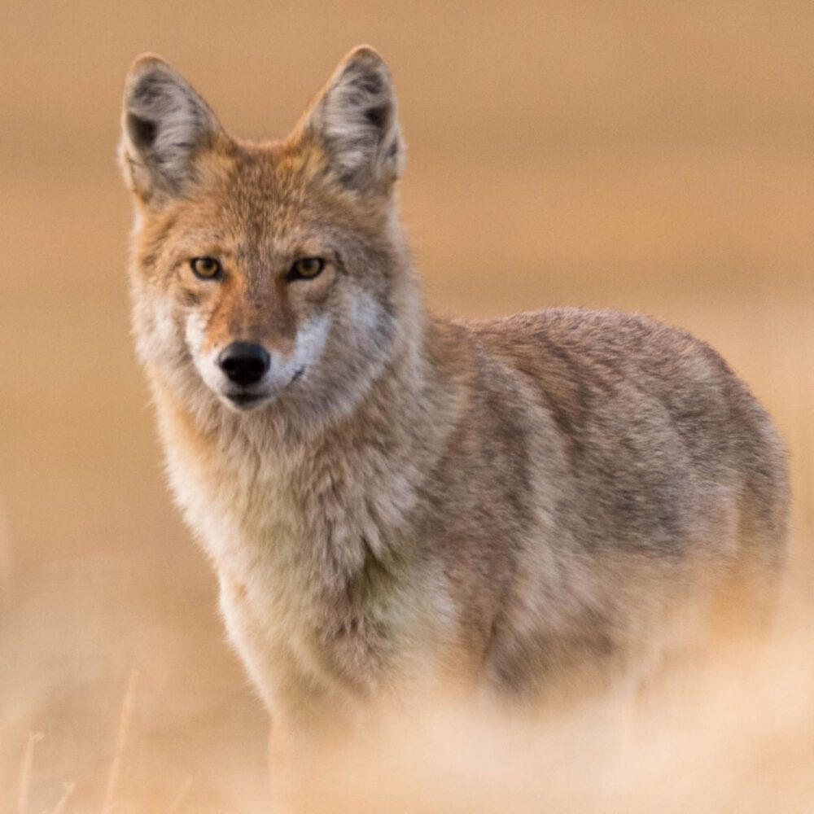
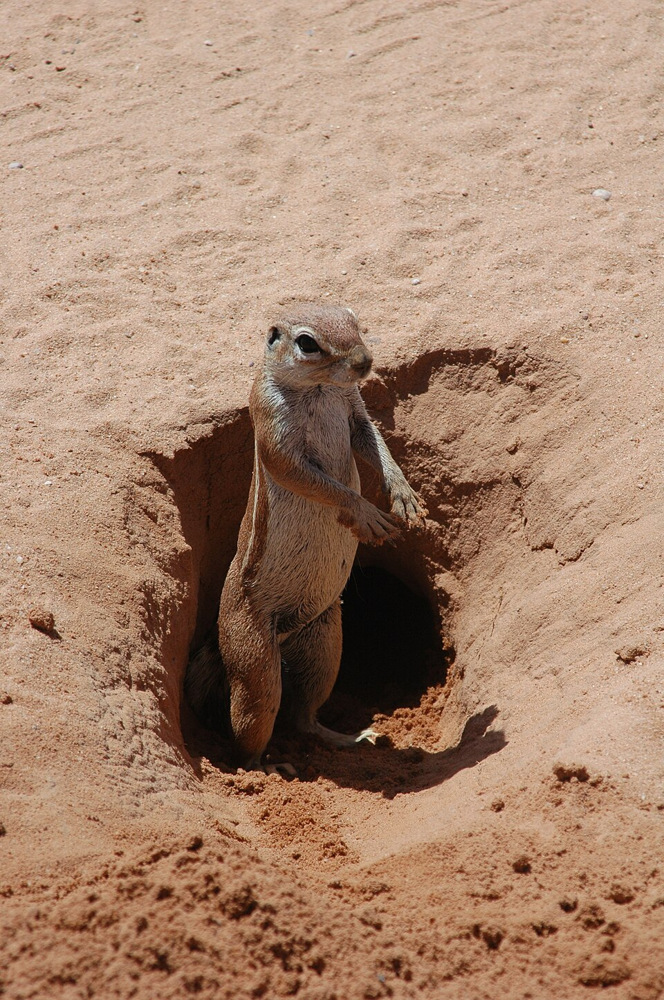
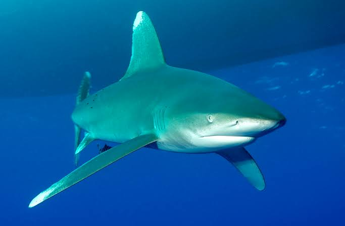
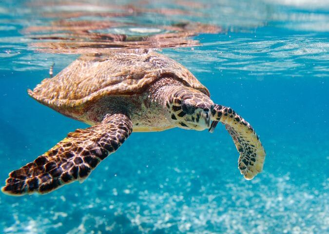
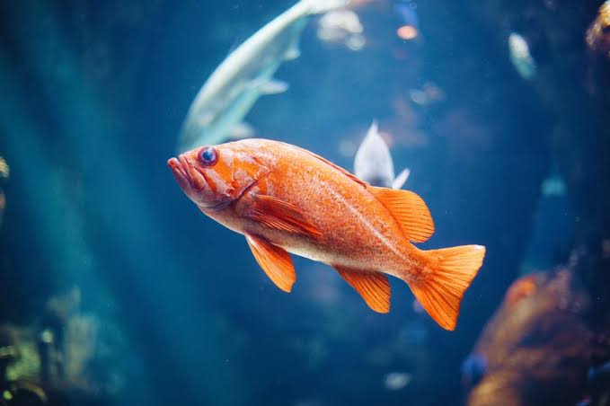

Terrestrial animals are animals that live mainly on land. The word terrestrial comes from the Latin word terra, which means Earth or land. These animals spend most or all of their lives on land and have special adaptations that help them survive in different environments such as forests, grasslands, deserts, mountains, and plains. Unlike aquatic animals, which live in water, terrestrial animals breathe air using lungs and move using legs, paws, claws, or other body structures suited for life on land.
Classification based on diet
- Herbivores: Eat only plants.
Examples: Elephant, deer, rabbit, giraffe. - Carnivores: Eat other animals.
Examples: Lion, tiger, wolf, leopard. - Omnivores: Eat both plants and animals.
Examples: Bear, fox, pig, human.
Importance of Terrestrial Animals
- Help maintain ecological balance by controlling populations of other species.
- Disperse seeds and support plant growth.
- Contribute to food chains and healthy ecosystems.
- Provide food, clothing materials, transportation, and companionship for humans.
- Support biodiversity and the health of natural environments.



Aquatic animals
Aquatic animals are animals that live primarily in water. The word aquatic comes from the Latin word aqua, which means water. These animals are specially adapted to survive in freshwater and saltwater environments such as oceans, seas, rivers, lakes, ponds, and wetlands. Unlike terrestrial animals, aquatic animals spend most or all of their lives in water. Many breathe through gills, while marine mammals such as whales and dolphins breathe air using lungs and must regularly come to the water's surface.
Classification based on habitat
- Freshwater Animals: Live in rivers, lakes, ponds, and streams.
Examples: Trout, catfish, freshwater turtle, frog. - Marine Animals: Live in oceans and seas.
Examples: Blue whale, shark, dolphin, octopus, sea turtle. - Brackish Water Animals: Live where freshwater and saltwater mix, such as estuaries and mangrove forests.
Examples: Mudskipper, mangrove crab, some species of shrimp.
Importance of Aquatic Animals
- Maintain the balance of aquatic ecosystems.
- Form an essential part of marine and freshwater food chains.
- Provide food and livelihoods for millions of people.
- Help keep water ecosystems healthy by controlling algae and other organisms.
- Support biodiversity and contribute to scientific research and tourism.


